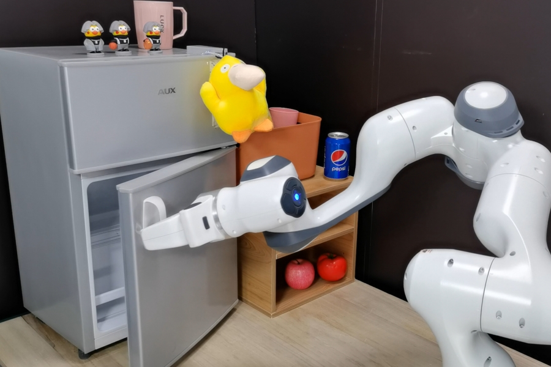
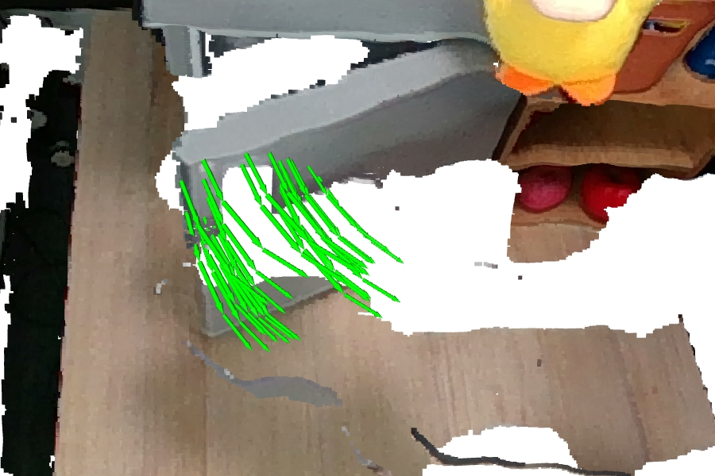

General Flow
We extend previous work to propose general flow as foundation affordance. Property and downstream application are analysis to reveal its foundational status. We extract general flow label directly from human RGBD video datasets and design new algorithm for general flow prediction. Zero-shot cross-embodiment skill transfer is achieved in the real world. All of these show the great power and potentiality of general flow affordance.
Zero-Shot Real World Execution
For all 18 tasks, we provide 4 human videos example and 3 demos of robot trials. We keep gripper position, grasp manner, initial state, scene setting and policy behaviour as diverse as possible. Please check out our paper for detailed method and deployment setting.
Video Demo for
with "
" action.
Video Examples from Human Datasets
Real World Trial-1
Real World Trial-2
Real World Trial-3
Zero-Shot General Flow Prediction
We provide visualiaztion for general flow prediction during zero-shot execution. 25 trajectories are selected for clearity. General Flow prediction is robustness to embodiment-transfer and segmentation error to some extend.
Visualization for
with "
" action.

Scene Reference

General Flow Prediction
More Visualization from Human Video
We provide more visualiaztion of prediction on human videos. 25 or 50 trajectories are selected for clearity.
select
of visualization.
(thanks for your patience to wait for loading since the image size is large)

Emergent Properties of General Flow
With general flow prediction task trained in scale, our model acquire multiple emergent properties, which is impossible for small-scale imitation learning setting.
- Semantic Rich & Controllable [(a)(b)]: semantic of flow could be changed easily by switching language instruction.
- Robust to the Label Noise [(c)(d)]: even with severe noise in label (significant deviation in 'open Safe' and almost static in 'pickup Toy Car'), our model could predict right trend. (red indicates label and green indicates prediction in the figure.)
- Spatial Commonsense Acquisition [(e)(f)]: the model adjust its prediction scale to fit for object spatial relationship (both end on the table, and larger scale for longer distance).
- Semantic Rich & Controllable [(a)(b)]: semantic of flow could be changed easily by switching language instruction.
- Robust to the Label Noise [(c)(d)]: even with severe noise in label (significant deviation in 'open Safe' and almost static in 'pickup Toy Car'), our model could predict right trend. (red indicates label and green indicates prediction in the figure.)
- Spatial Commonsense Acquisition [(e)(f)]: the model adjust its prediction scale to fit for object spatial relationship (both end on the table, and larger scale for longer distance).

Failure Case
Trajectory Deviate
Gripper Drop
Robot Stuck